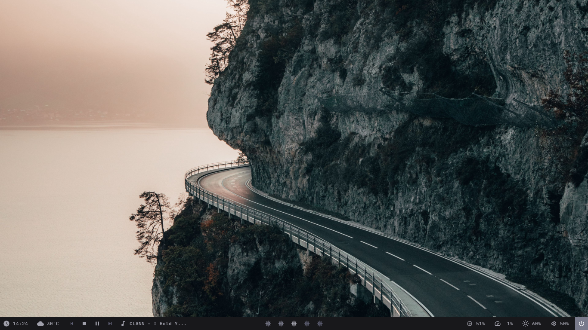

About Me
Hi, I am Aaron Anthony Monis! I'm 18 years old and in the CSE program of IIIT Hyderabad via the DASA
mode of admissions. I am a native of Mangalore, Karnataka, currently residing in Muscat, Oman.
I have always been interested in technology. Eventually, I decided to actually take up Computer Science
as a study, and here I am, sleepy but satisfied with what I have learnt so far.

I am a foodie, a big one at that. I love eating any kinds of dishes, particularly sweet ones.
I love stories. If I find a story with an exciting or fresh premise, I will definitely go through it; no
matter the medium. By the way, if it can be read or watched, I prefer reading.
As for sports, I like football, basketball, chess and swimming. I tend to follow these sports regularly. I also participate in them from time to time (not now, of course, and I am not particularly good at them either). I also follow Formula 1 regularly. Formula 1 is of fond interest due to the engineering side of things and the psychological behaviour of the drivers.
I like experimenting with OSes. I jump OSes from time to time. I currently use Ubuntu (daily driver), Arch (flex), and Windows. I like ricing them as well, but I often prefer keeping things close to the standard except for functional changes.
As for sports, I like football, basketball, chess and swimming. I tend to follow these sports regularly. I also participate in them from time to time (not now, of course, and I am not particularly good at them either). I also follow Formula 1 regularly. Formula 1 is of fond interest due to the engineering side of things and the psychological behaviour of the drivers.
I like experimenting with OSes. I jump OSes from time to time. I currently use Ubuntu (daily driver), Arch (flex), and Windows. I like ricing them as well, but I often prefer keeping things close to the standard except for functional changes.

I am skilled in the following programming languages:
- C/C++
- Python
- HTML
- CSS
- JavaScript
- Java
- Django
- Flask
- SQL
- MongoDB

Image
Gallery

| Day/Time | 9:00-10:00 | 10:00-11:00 | 11:00-12:00 | 12:00-1:00 | 1:00-2:00 | 2:00-3:00 | 3:00-4:00 | 4:00-5:00 |
|---|---|---|---|---|---|---|---|---|
| Mon | Computer Systems Organisation | Probability and Statistics | LUNCH | VE | ||||
| Tue | Computer Systems Organisation (T) | Introduction to Software Systems | Probability and Statistics (T) | |||||
| Wed | Computer Systems Organisation | Probability and Statistics | Free Slot | |||||
| Thu | Computer Systems Organisation (T) | Introduction to Software Systems | Computer Systems Organisation (T) | |||||
| Fri | Computer Systems Organisation | Probability and Statistics | Introduction to Software Systems (LAB) | |||||
| Sat | Probability and Statistics (T) | |||||||